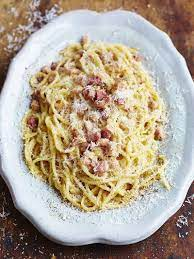

Carbonara

Recipe for a traditional Italian carbonara
This is a recipe taught to me by my dad, an Italian chef
Ingredients
- Guanciale
- Pecorino Cheese
- Parmesan Cheese
- Eggs
- Spaghetti
- Pepper
- Salt
Steps
- Add salt and water to a pan, bring to boil
- While water is boiling, cut Guanciale into small cubes
- Add Guanciale to a frying pan on medium heat (no oil needed) and regulalry stir
- Add Spaghetti to boiling water and cook for 6 minutes
- While Guanciale and Spaghetti cook, mix 2 egg yolks, 1 whole egg, Pecorino cheese, Parmesan cheese and pepper
- Once Guanciale and Speghetti are cooked add Saghetti to the Guanciale frying pan
- Add a generous amount of water and increase heat, continously stir to release the starch from the pasta
- Once pasta is cooked, turn off the heat and add the egg and cheese mix
- Mix in well and serve